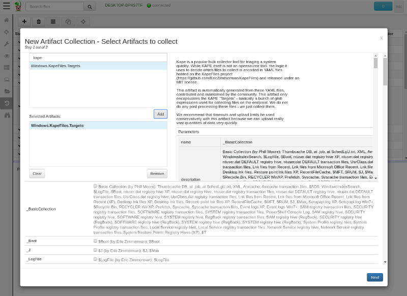
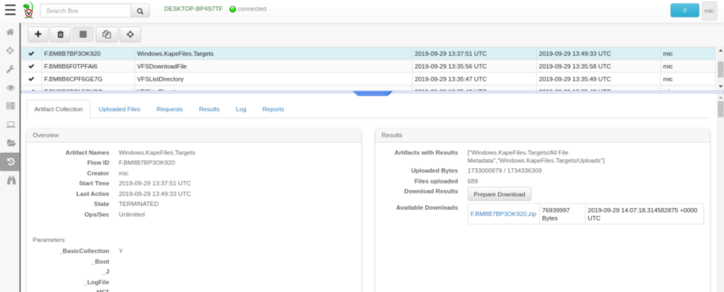

This is part 1 of the 3 part series focused around triaging and file collection.
Traditionally digital forensic practitioners and incident responders collected disk images to retain evidence in cases of compromise. However in recent times, the size of investigations and the short time frames required, started a trend of more selective evidence collection. Instead of collecting the entire disk, responders now prefer to collect only critical files allowing more rapid triage.
However, which files should we collect? Knowing which files to collect and what to do with them was previously reserved for DFIR experts. These days, we have some excellent public resources for this. The best resource for windows systems is probably the KapeFiles repository. This is a public repository maintaining a set of Kape configuration files. Kape is an excellent tool geared at file collection — simply acquiring various files of interest from a system for triage purposes.
Although Kape itself is not open source, the KapeFiles repository is a community project available under the MIT license. It therefore seemed like a perfect way to leverage the specialist DFIR knowledge from the community and develop a useful Velociraptor artifact based on this knowledge.
This article outlines this new artifact and how it can be used to collect triaged files quickly and efficiently.
Kape parses a set of Target files (with .tkape extension). These files essentially specify a set of file globs (i.e. paths with wild cards) specifying files to collect. Kape also supports targets referring to other targets thereby expressing higher level targets in terms of lower level targets. For example selecting the WebBrowsers.tkape target, will include all glob expressions specified in Chrome.tkape, FileFox,tkape etc.
When using Kape to collect files, the user specifies one or more Targets which are then collected into a directory, or some container (e.g. Zip file).
Previous versions of velociraptor added several VQL artifact definitions based on the KapeFiles repository, but these were hand written and difficult to maintain in sync with the public contributions to the KapeFiles repository.
Since release 0.3.4, Velociraptor has a script that automatically parses out Kape target files and generates a Velociraptor artifact with the same targets and globs — thereby creating a functionally equivalent artifact to the KapeFiles repository.
To collect files, simply select the Windows.KapeFiles.Targers artifact from the Collected Artifacts screen in the GUI. After adding the artifact to our collection (by clicking Add) we see a list of targets with check boxes next to them. Each target may invoke several rules (and therefore collect different files), but the dependencies are listed next to the target.
 Selecting the Windows.KapeFiles.Targets artifact for collection on an endpoint.
Selecting one or more targets will collect those files from the endpoint to the Velociraptor server. Once the files are fully collected to the server, you can download them as a zip file on demand by clicking the “Prepare Download” button.

When the collection is complete, we can click the “Prepare Download” button which will prepare a Zip file on the server for us to download.
What can we use this for? Suppose you suspect a compromise. It is imperative to preserve as much of the evidence as possible, as quickly as possible.
Running the Kape target BasicCollection will collect a lot of interesting files, including the $MFT, event logs, prefetch, amcache among many other files. This helps us to preserve as much of the state of the system as we think will be relevant for our investigation in future.
Depending on the total amount of data collected we may also issue this collection on one or more machines. Triaging will capture and preserve the evidence. We can then parse it with other tools externally and just keep the snapshot.
If Velociraptor is not installed on the endpoint, we have a number of options:
The next part of this series will discuss how to interactively collect triage files while physically (or remotely) logging into the machine.